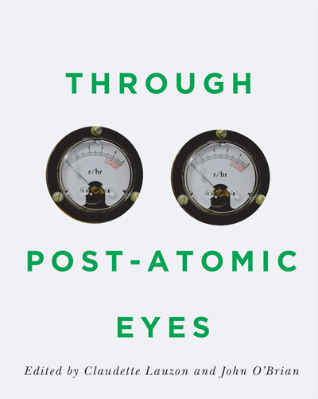
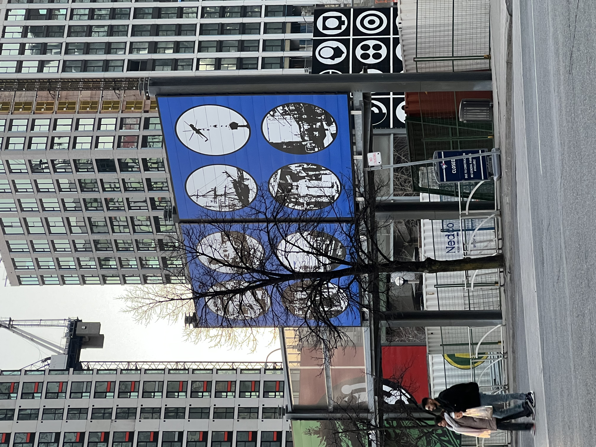
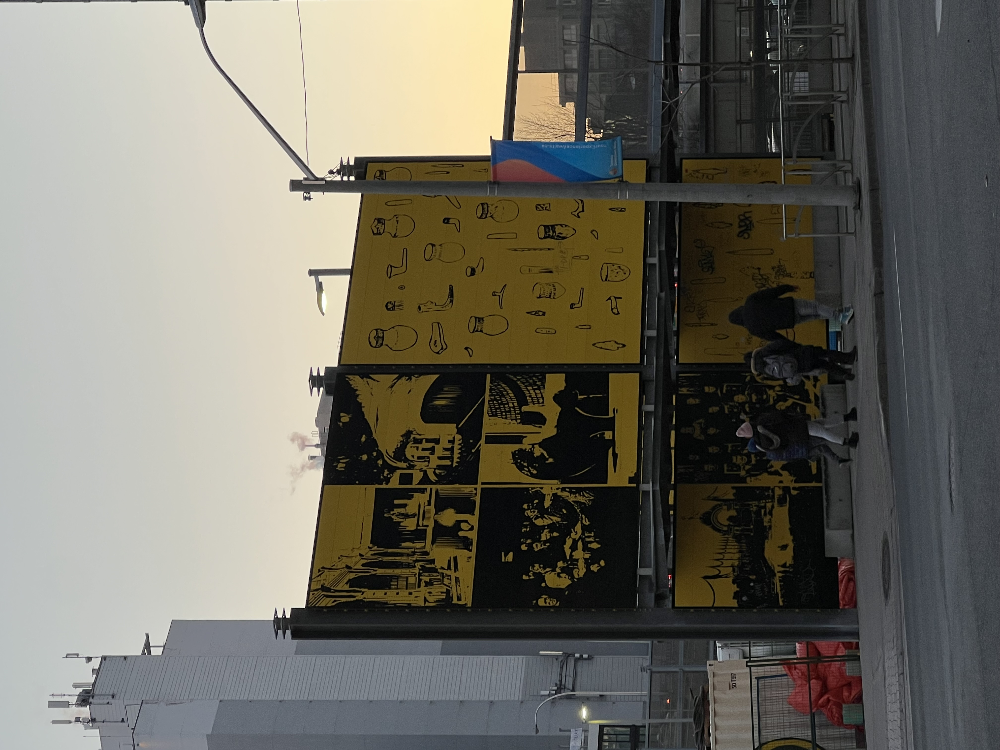
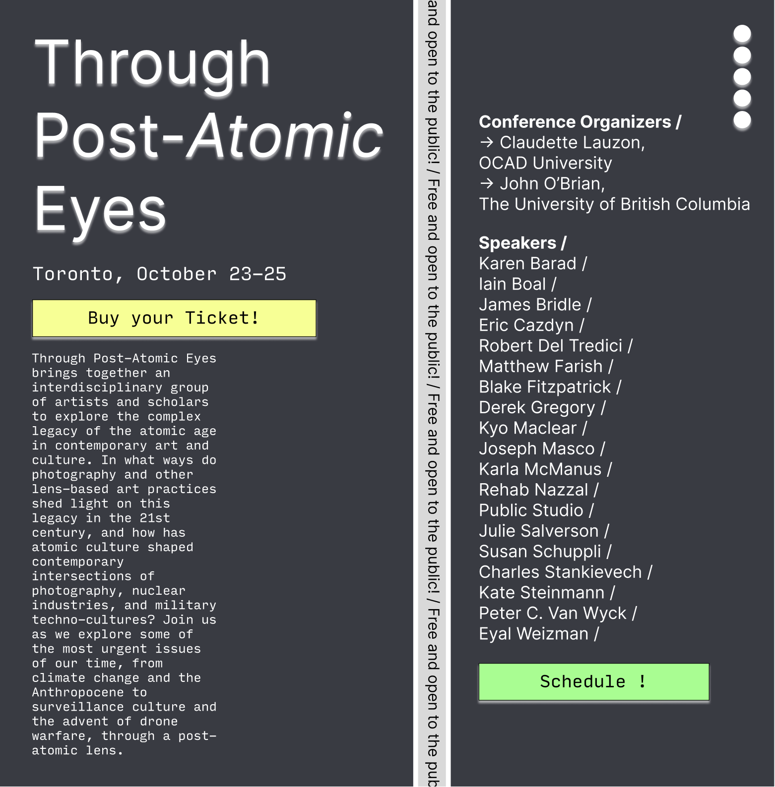
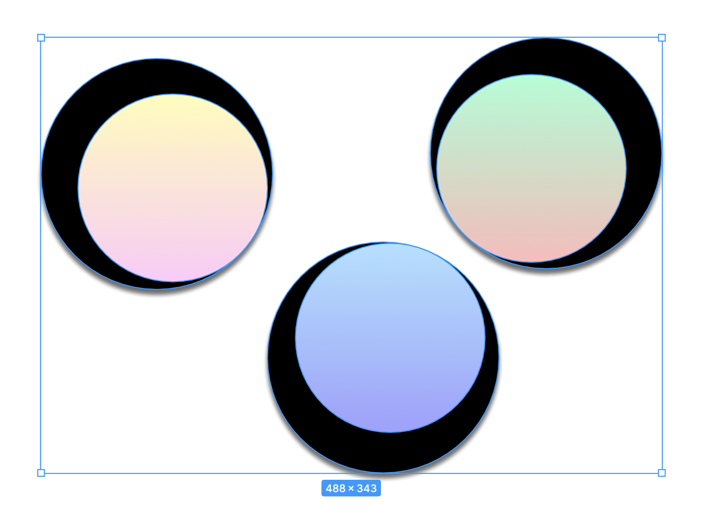
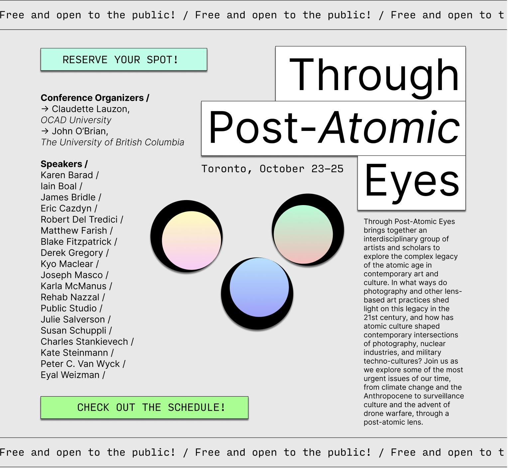
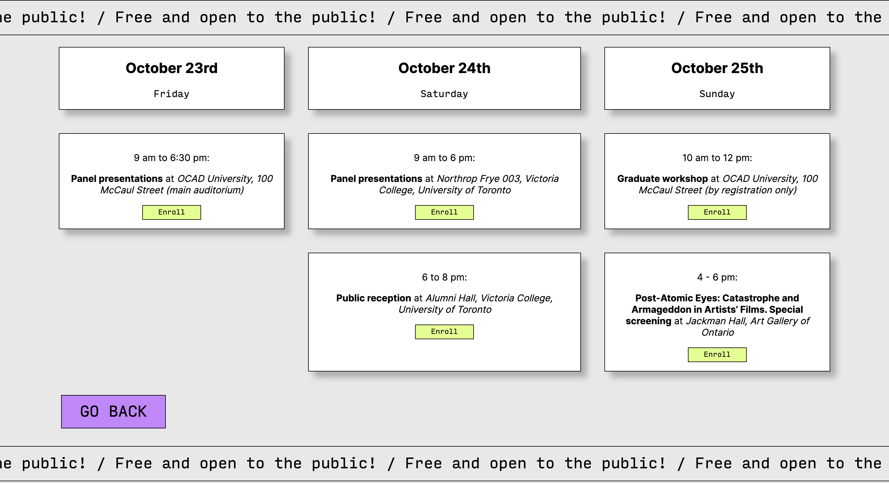

"Through Post-Atomic Eyes" Poster Design
Project 2: Poster
Process Document
by Ecem Ozturk
Interactive Media:Web 501
OCAD Winter 2024
Part 1: Ideation
The sole reason I chose this text was the mention of the word "atomic" in the title. The word itself resonated with what might I design to be the layout. It had a meaning in my own historical encyclopedia. When I researched the title, I found out that there was an actual book written in the name of this event. After I took a look at the description, I had more insight into the planned event. Which was an artist's film and a grad workshop. This was an event that is organized by two different schools, and a lecturer list that is long and heavy.
I decided to start thinking about this project as an actual poster design project.
Later, while I was walking home, I couldn't help myself but started noticing these large posters designed to cover an ugly billboard covering a construction site. The graohic elements and the illustration of the billboard was very pop-art, and illustrative with bold and contrasting color choices with strong lineworks. I liked the accent colors being the focal of design, along with circle shaped "windows" into what was happening in the back.
 Then, focusing on the word eyes, and searching for a visual lead there has came up to my ming. With that direction, I decided to include a series of shapes that would look like lenses to look from. This event and book is about a sociological work around a time period. Therefore using eyes and lenses as a symbol is fitting. But I should add this symbolism in through keeping in mind the contemporary, industrial and simplified design lens.
.jpeg)
Part 2: Execution
My first design was this one. I chose a dark background with a split in the middle that would have a constantly moving call to action text. This one had some issues, first being the call to action text could not be read easily. Which is a big problem, but an easy fix. I placed five identical circles on the top, to reseble a notebook layout. However, it doestn serve that much to its meaning. And there is no meaning behind it. Other than that, my layout features the description paragraph underneath the title, and the speakers column with a different font-size, in the opposite side of the page. This is chosen specifically to make the eye travel between the two sides back and forth.
After my first layout event, I came up with this graphic design of three lenses. I used linear gradient and a pale color palette to create these lenses that looks like they are looking at a distant nature. The grading affect looks as if there is a natural view underneath. I liked the implication of an abstraction there. I played around with the black areas to make it seem like they are looking at opposite directions.
My final design combines some ideas I had previously. I decided on going with a muted colored background and high contrast high hue button colors to accentuate their functions. I divided the layout into two. This is also how I structured the code, too. I used displa:flex for the left side of the layout, and the other right side elements were all position:absolute. I used a little JS code using ChatGPT to animate the moving text on the top and the bottom parts of the page. I added a second page that looks like a calender to show the schedule. Overall, I am proud and feel like I took a step towards developing my own design style.
